CUA-Master：双循环递归改进电脑智能体
27B模型在OSWorld Verified得80.2，OSWorld 2.0得36.9。
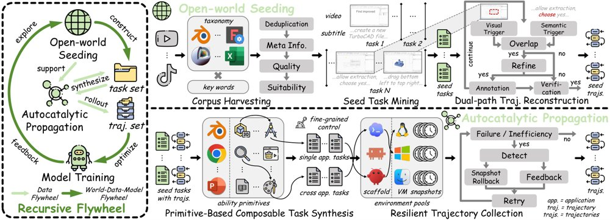
图：双循环递归飞轮流程，黑色虚线框内整合开放世界种子（右上）与自催化传播（右下）。
解决了什么问题。电脑操作智能体（CUA）受限于交互数据多样性、可控性和可靠性不足，传统“先造数据再训练”的流程缺少迭代反馈。已有递归自我改进多依赖模型自生成经验，属于封闭世界优化，能力扩展受限且收益递减。
方法。作者提出 CUA-Master，一个嵌套双循环递归框架：外层“世界—数据—模型”飞轮持续引入开放世界语料，并用模型当前弱点指导下一轮数据构建与优化。内层数据飞轮把教学视频挖掘为种子任务，经视觉—语义双路径重建轨迹，再抽象为可复用原语，组合成复杂度可控、可验证的合成任务；轨迹收集采用反馈引导的快照回滚重试。
关键结果。CUA-Master-27B 在 OSWorld Verified 得 80.2，在 OSWorld 2.0 得 36.9，在 WeaveBench 得 43.9，在 Agents’ Last Exam 得 25.0；相比同规模 UI-Mate-27B 分别提升 2.6、12.9、25.6、11.8。OSWorld Verified 用时 8 分钟；OSWorld 2.0 以 36.9 略高于 Qwen-3.8-27B 的 36.5，运行时间减少 24%。在难例合成上，K=40、N=3 时 rollout 成功率为 49.8%，基线为 14.6%；K=50、N=8 时为 18.7% 对 0.0%。
为什么值得看。它把开放世界数据获取、可控任务合成和模型迭代放进同一个闭环，为 CUA 提供了一条不依赖纯自生成经验的扩展路径。27B 规模在多个 GUI 与 GUI+CLI 基准上接近更大或闭源模型，说明数据飞轮和混合动作空间可能比单纯堆参数更关键。
局限 / 存疑。论文自述的局限是：递归改进依赖大规模虚拟机、轨迹采集和迭代训练，算力与基础设施成本高；合成数据质量上限受标注模型能力制约，强标注器收益更大，也带来额外推理成本。还需注意，OSWorld 2.0 与 Agents’ Last Exam 的绝对得分仍只有 36.9 和 25.0，距离可靠通用仍有差距。
基础大模型 & 基础模型底层研究
AI 智能体 Agent / 自主智能
强化学习 RL & 序列决策
alphaXiv · arXiv
NorthCUA用规模化经验加速电脑使用智能体
NorthCUA以全生命周期运行时收集软件任务经验，训练桌面与网页GUI智能体；397B的Pro在多项基准上超过参数更大
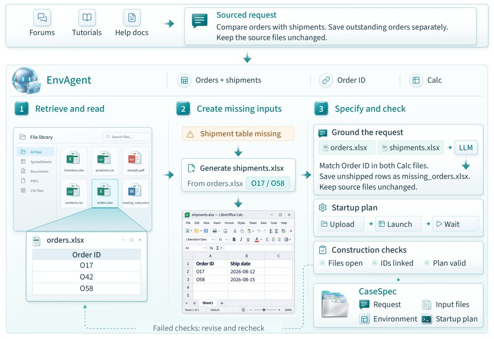
请求驱动的桌面环境构建示意：EnvAgent 识别所需资源、检索订单表并据其标识符补建缺失的货运表，由 LLM 把请求对应到文件名与共享的 Order ID 字段，再规定启动与检查步骤、在检查失败时修改输入或指令，最后由 GUI 智能体完成所要求的比较（图示为示意）。
解决了什么问题。电脑使用智能体正从单步点击扩展到跨应用的复杂软件工作，但要让模型把早期决策与最终结果连起来，需要大量「任务构造—执行—判定」闭环经验。构造这类任务本身就要有可落地的请求、可用的初始环境与可靠的成败判定，长程交互还会让截图与工具反馈不断膨胀上下文。因此任务如何生成、智能体如何长时间执行、经验如何回流训练，三者必须联合设计。
方法。作者把执行框架做成覆盖全生命周期的 Harness：环境准备、执行、评估到记录保存都在同一运行时内完成，Batch Rollout Service 负责并行调度工作节点并让各阶段重叠，以支撑高并发经验采集。在此之上，「经验飞轮」批量构造任务并按评估报告的分项打分筛选示范数据，再经长程监督微调与桌面—网页联合强化学习训练 Nano、Mini、Pro 三档模型。另有一个 NorthCUA-Ultrafast 变体，用轻量分类头直接选择有限动作以绕过解码。
关键结果。论文称 397B 的 Pro 在两个 grounding 基准、OSWorld-Verified 与 WebArena-Verified 上均超过「万亿参数」的 Qwen3.8-Max 与 Kimi-K3；35B 的 Mini 在 OSWorld-Verified 上超过 Kimi-K3、在 WebArena-Verified 上超过 Qwen3.8-Max。WebArena-Verified 的最终 RL 检查点为 Nano 67.2%、Mini 70.4%、Pro 73.9%，SFT 阶段 pass@3 分别是 Nano 69.3%、Mini 73.9%。作为对照，作者自测 GLM-5.3-Flash-Vision 在 OSWorld 2.0 全部 108 个任务、500 步预算下取得 14.8% 完全完成与 48.7% 部分得分。延迟方面，Full generation 在匹配任务集上的平均任务时间为 616.8 秒；Ultrafast 的头训练使用约 226,000 个决策状态，head-only 仅训练 4.21M 参数（约占完整多模态检查点的 0.045%），加 LoRA 后为 47.49M。ScreenSpot-Pro 与 OSWorld 2.0 上 NorthCUA 各档的具体分数，材料中未给出完整数值。
为什么值得看。它把「造任务、跑环境、判结果、选数据」串成一条可并行的工程流水线，说明电脑使用智能体的提升不只靠模型规模，也靠经验采集基础设施与评估信号的设计。对做智能体 RL 的团队来说，这套 Harness 与经验筛选口径比单点 benchmark 分数更值得复用。
局限 / 存疑。材料中多数对比表被截断，第三方基线多为作者自测且部分标注未报告，Pro 的 WebArena-Verified 成绩只来自一次覆盖全部 812 个任务的完整评测，缺少方差信息。评估依赖评审模型的分项打分来补充任务专用验证器覆盖不足的部分，这类判断本身可能引入噪声；同时 Full generation 平均每个任务仍需约 617 秒，长程成本尚未解决。
基础大模型 & 基础模型底层研究
AI 智能体 Agent / 自主智能
强化学习 RL & 序列决策
alphaXiv · arXiv
把个人智能体做成持续决策代理
论文提出 Avatar Intelligence，主张用持续个人智能体承载目标与决策委托，并以 AOI 衡量监督负担。
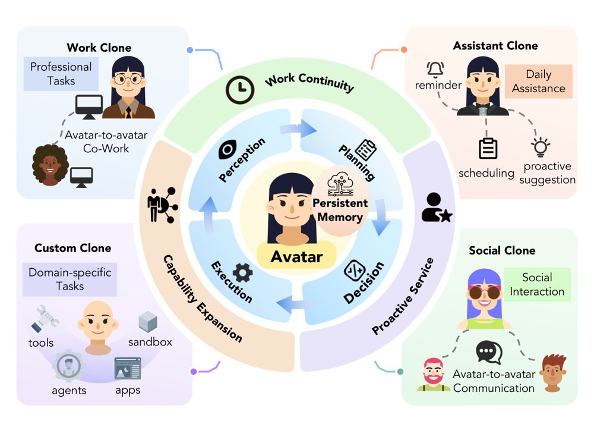
Avatar Intelligence 作为以用户为中心的操作系统：持久用户模型与记忆支撑感知—规划—决策—执行闭环，工作、助理、社交与定制克隆共享用户身份并连接工具、应用和其他智能体。
解决了什么问题。长程任务智能体已能跨应用执行，但用户仍需大量设定目标、消解歧义并核验结果。执行负担下降，规格说明、协调与验证的负担并未同步消失。
方法。论文以立场文章形式提出 Avatar Intelligence：把智能体视为以用户为中心的操作系统，用持久用户模型与记忆支撑感知、规划、决策、执行的闭环，并通过工作、助理、社交、定制克隆共享同一身份。它给出从 L0 到 L3 的成熟度路线图，主张从人在环内执行走向在授权域内的人在环上监督与端到端自治。评价上提出 Agentic Oversight Index（AOI=U−λP），并将身份连续个性化、基于 Rehearsal Engineering 的用户情境演化、技术安全与 Agent Insurance 列为开放挑战。
关键结果。论文未给出具体实验数字或基准结果；作为立场论文，它给出 L0–L3 四级成熟度路线图和 AOI=U−λP（λ>0）的评价式，并列出三项核心研究挑战。
为什么值得看。它把评价重心从单次任务成功率转向“交付价值减去人类监督负担”，为个人智能体的决策委托与问责提供可讨论的框架。
局限 / 存疑。论文没有实验验证，也未给出 AOI 的具体参数与校准结果；身份连续性、意图可预测性和 Agent Insurance 的可执行性仍停留在概念与制度设想层面。
AI 智能体 Agent / 自主智能
alphaXiv · arXiv
跨仓库联合开发基准：最强模型通过率 58.48%
CrossSWE 收录 171 个真实跨仓库协同任务，覆盖 165 个仓库、20 个领域、13 种语言，并验证只改单仓库
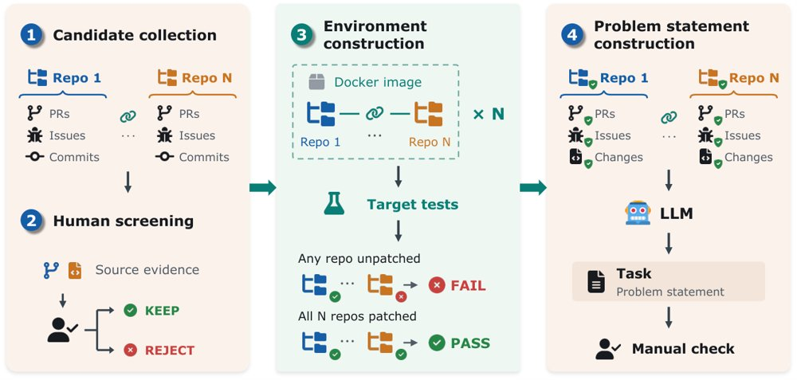
CrossSWE 基准的构建流程概览。
解决了什么问题。编码智能体在 SWE-bench 一类的单仓库问题上成功率越来越高，后续工作主要靠加长任务时间跨度和扩大代码改动量来继续提升难度，但任务范围始终被限制在一个仓库内。即便 BeyondSWE、DepBench 等基准引入了其他仓库，那些仓库也只作为理解 API 或依赖的上下文，智能体写的补丁和用于验证的测试仍留在单一仓库。然而在真实开发中，一处 API、库或协议的变更往往需要向依赖它的其他仓库传播，只改一侧无法实现预期行为。
方法。作者从 GitHub 上 2025 年 1 月至 2026 年 9 月的历史中挖掘跨仓库候选变更（如 API 演进、依赖迁移、provider–consumer 关系等），再经过人工筛选，剔除只涉及文档或发布说明的案例，并为每个任务构建包含全部参与仓库的 Docker 环境。核心验证是联合必要性检验：对涉及 N 个仓库的实例，穷举 2^N 种「基线状态与打补丁状态」的组合，并运行 FAIL_TO_PASS 测试，只有当全部基线状态以及所有只改部分仓库的配置都失败、所有补丁同时应用才通过时，该实例才会被保留。随后用统一的 mini-SWE-agent v2.4.6 脚手架评测五个前沿模型，每个实例最多 300 步、成本上限 10 美元，并人工归类失败轨迹。
关键结果。最强的 GPT-6.1 Sol 仅取得 58.48% Pass@1，明显低于论文提到的其在 DeepSWE v1.1 上的 75.2%；DeepSeek V4.1 Flash 为 52.63%，Claude Sonnet 5.5 为 50.29%，Qwen3.8-Flash-Next 为 45.03%，GLM-5.3 Flash 为 43.86%。从 165 个双仓库实例衍生出的 330 个单侧修改任务上，GPT-6.1 Sol 升至 64.55%（+6.07 个百分点），平均步数从 32.90 降到 18.54；DeepSeek V4.1 Flash 升至 61.81%（+9.18），步数从 152.70 降到 126.94。跨仓库不一致是最主要的失败模式，占 GPT 失败轨迹的 44.2%、Claude 的 41.2%、GLM 的 40.7%、DeepSeek 的 29.2%。参考补丁规模上，56.1% 的实例修改超过十个文件、66.7% 修改超过 200 行，而 SWE-bench Pro 分别为 6% 和 13%，SWE-Bench ProMax 为 30% 和 32%。
为什么值得看。它把评测维度从「单仓库内更难」转向「跨仓库协调一致」，对应 API 演进、依赖迁移、兼容性修复等真实工程场景，说明单纯拉长任务时间跨度并不能覆盖这类能力缺口。失败模式分析也给出了可操作的改进方向：智能体更常失败于跨仓库接口与协议不一致，在逻辑推理上较少失败。
局限 / 存疑。171 个实例中有 165 个只涉及两个仓库，仅 6 个涉及三个及以上仓库，且参与仓库已预先给定，不考察从更大生态中自行发现相关仓库的能力。所有实验共用 mini-SWE-agent 这一 Bash 交互脚手架，并受 300 步、10 美元上限约束，结论能否迁移到其他智能体框架仍需直接验证。
AI 智能体 Agent / 自主智能
alphaXiv · arXiv
计算机使用智能体的恢复能力仍不足
ReTrace 通过扰动与目标导向动作回放系统评估计算机使用智能体的恢复行为，发现能力潜伏但难以稳定调用。
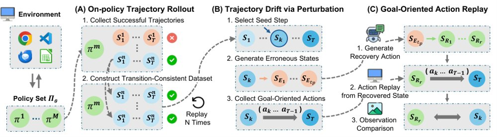
ReTrace 概览：(A) 在策略轨迹 rollout 中收集成功轨迹并重复回放动作序列 N 次以构建转移一致数据集；(B) 通过扰动选择恢复目标并将智能体推入错误状态；(C) 从恢复状态回放剩余动作，检验是否复现原任务结果。
解决了什么问题。长程计算机使用任务中错误会累积，动作还会留下非预期副作用，因此智能体需要把环境恢复到先前完好状态。已有做法依赖环境重置、完整动作回放或网页 API 回滚，在专有环境、长程任务和桌面场景中分别不可行、昂贵或受限。模型自身能否恢复、这种能力是否影响任务完成，此前缺乏系统研究。
方法。作者提出 ReTrace：先收集成功轨迹，并将每个动作序列重复回放 N 次以构建转移一致的数据集；再通过扰动选定恢复目标并把智能体推入错误状态。随后从恢复状态回放剩余动作，检验智能体能否复现原任务结果，并在 OSWorld 与 WindowsAgentArena 上比较隐式与显式恢复。
关键结果。在 OSWorld 和 WindowsAgentArena 上，最强模型 Claude-Sonnet-4.6 与 GPT-5.4-CUA 的恢复能力仍有限，开源 EvoCUA-32B 平均恢复率低于 1%；显式模型级恢复平均比隐式恢复高 17.86%。在端到端设置中，模型级恢复让 Qwen3.5-9B 在每种恢复设置下都优于无恢复基线，平均提升 2.12%；但即使最强模型配合基本显式恢复策略，也未达到完全恢复。
为什么值得看。这表明当前智能体并非完全缺乏恢复能力，而是标准前向执行没有有效激发它；系统评估恢复行为可为长程任务可靠性提供可度量基准。
局限 / 存疑。评估集中在 OSWorld 与 WindowsAgentArena，论文未给出向更多专有桌面和网页环境泛化的具体数字；恢复机制设计本身也超出本文范围。
AI 智能体 Agent / 自主智能
alphaXiv · arXiv
智能体外壳连接视频生成、世界模型与自改进
一篇综述提出以智能体外壳为分析单元，连接视频生成、世界模型交互与递归自改进。

从视频生成到智能体外壳介导的世界交互：外壳围绕生成器完成观察、决策、控制翻译、调度与反馈整合，图中缩略图仅为示意而非实验结果。
解决了什么问题。视频生成模型能产出片段，但单模型不负责把创作简报拆成镜头、维持跨场景引用、检查素材并做局部编辑，也难以控制生成成本。交互视频还要求系统基于观察持续行动，而不只是输出一段成品。现有综述多分别讨论生成模型、世界模型或智能体，缺少以视频生成器外围可执行运行时为统一分析单元的视角。
方法。作者把 agent harness 定义为围绕模型构建上下文、暴露工具、维护状态、路由反馈并执行预算的可执行运行时，并沿三条方向组织材料：智能体视频生成、智能体世界建模、面向视频生成的递归自改进。文章按工作流功能与交互接口分析生产与交互，并区分当前输出修复、harness 状态/生成器参数/评估器更新，以及开发流程改变。
关键结果。综述将材料组织为三条主线，对应三个核心问题：智能体视频生成、智能体世界建模，以及面向视频生成的递归自改进。作者区分当前输出修复、harness 状态/生成器参数/评估器更新和开发流程改变，并提出四条改进重新进入视频开发的通道。文中明确称，所调查系统中尚无系统修改训练与验证生成器的流程；论文未给出具体实验数字，图示缩略图也不是实验结果。
为什么值得看。这个框架把评估从单段视频质量扩展到任务完成、状态连续性和改进是否被保留，可能推动视频生成从一次性合成走向可审计的长期工作流。
局限 / 存疑。这是综述与立场文章，未提供统一基准或实验验证。作者也承认尚无被调查系统完成修改训练与验证流程的完整 RSI 闭环，框架的实用性仍需实证。
生成式 AI
AI 智能体 Agent / 自主智能
alphaXiv · arXiv
开源模型零样本用机器人，统一框架是关键
清华等提出 uni-robot-agent 统一框架，Qwen3.8-Flash-Next 在 RoboDojo 得 3
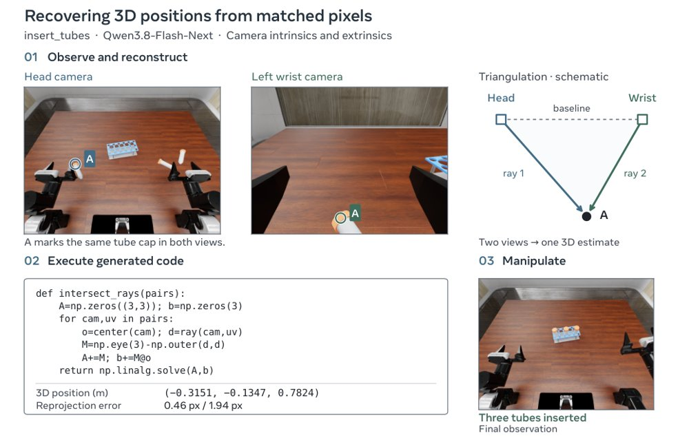
在 insert_tubes 任务中，智能体自己写代码做多视角三角化来定位试管：标为 A 的匹配像素定义视线，记录的坐标与重投影误差把计算和输出连起来，最后一帧是随后的抓取与插入。
解决了什么问题。机器人操作智能体（RUA）此前主要依赖闭源前沿模型，权重不可得，研究者既无法通过继续训练提升其能力，也难以做缓存等模型级优化，而大规模 API 调用成本高昂。开源权重模型在空间理解与智能体能力上存在差距，已有工作常靠真值深度、任务验证器反馈等特权信息或任务专用技能绕过。作者主张先建立通用、有效的 harness，系统弄清并释放开源模型的现有能力，再谈机器人专用训练。
方法。uni-robot-agent 分 agent、orchestration、tool、service、backend 五层，共享工具在多个环境与本体间复用，新增环境只需一个适配器，避免 N×M 套实现。编排层用后台调用加资源感知调度，让模型推理与物理执行形成两段流水线，共享独占资源的动作仍按提交顺序执行。交互只使用 RGB、相机标定、本体状态与指令，不接触仿真深度和任务验证器反馈，并配合快照一致性、重复请求去重、带停止判据的运动监控、数值化执行反馈和滑动窗口图像淘汰。
关键结果。在 RoboDojo 42 个任务、252 个 episode 上，Qwen3.8-Flash-Next 取得 25.00% SR 与 31.39 Score，超过 GPT-6 Astra–RoboProbe 的 22.48% SR 与 28.97 Score；DeepSeek-V4.1-Flash 为 21.39% SR、27.11 Score，换用 GAP 等 harness 则损失 8.89% SR 与 10.38 Score。自建 19 项真实桌面任务中，Qwen 得 49.50 分，优于 Dream-1 的 35.50、接近微调 π0.5 的 47.75，GPT-6 Astra 配该 harness 为 75.50。去掉深度后 Qwen 由 35.89 降至 31.39（保留 87.5%），Astra 由 55.83 降至 55.04；连相机参数也去掉时 Qwen 跌至 9.13。关闭技能库仍有 30.31 分（保留 96.6%）。成本上 Qwen 每 episode 约 1.09 美元，Astra 约 21.29 美元；流水线使 episode 时长缩短 4.8% 至 73.7%，执行与模型请求重叠 84.5% 至 93.8%。
为什么值得看。它给出了一个可复现、可替换组件的开源基线，证明不靠特权信息与闭源蒸馏也能在仿真和真机上做出有竞争力的机器人操作智能体，为后续用机器人交互数据继续训练提供了统一接口和数据来源。作者还通过跨代际、跨家族、跨规模的对比，把有效机器人操作归结为视觉理解、空间定位、几何代码与具身推理四类通用能力的组合。
局限 / 存疑。真实世界对比并不完全同条件：uni-robot-agent 额外使用 RealSense D405 深度，而 π0.5 与 Dream-1 只用 RGB，且真实评测是自建、以评分细则计分的基准，部分得分不等于完整任务成功率。此外部分模型对比只跑 1 个 seed、1 种布局，Qwen 在精密操作（10.21）与长程任务上仍落后于 Xiaomi-Robotics-1、OpenWAM-α，去掉相机参数后性能大幅下滑也说明方法仍依赖标定。
AI 智能体 Agent / 自主智能
机器人 & 具身智能
alphaXiv · arXiv
MAServeBench：多智能体服务基准
新基准把多智能体协作规则变成可复现的服务负载，用语义轨迹比较不同释放与资源条件下的表现。
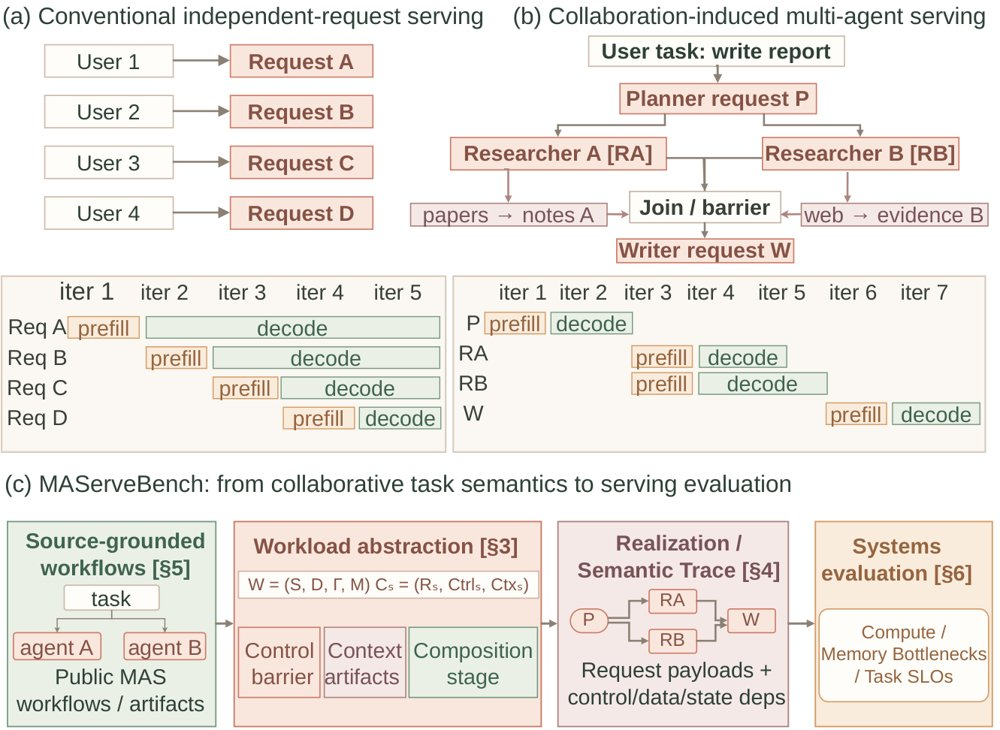
协作重塑服务需求：独立请求到达与多智能体任务引发的依赖请求、产物交换和同步不同，MAServeBench 提供可控、可复现的评测。
解决了什么问题。多智能体系统把一次用户请求拆成相互依赖的模型调用与工具操作，这些操作在不同时刻就绪、携带演化上下文，带来变化的并发、计算和内存需求。传统服务基准把请求视为独立到达，而执行轨迹只记录已发生的工作，不记录生成这些工作的协作规则。
方法。MAServeBench 用可组合阶段在共享任务绑定下改变协作与上下文构建，并通过原生执行生成负载。它引入分层语义轨迹，保留实际操作与依赖关系，从而在固定工作下控制释放时机和资源条件进行比较。实验在 vLLM 与 vLLM-Ascend 上运行，覆盖七种结构、30 个任务绑定和 32/64/128 用户规模。
关键结果。配对实现与源工作流在任务质量上接近：成功/准确率指标的绝对差异为 1.2–3.8 个百分点，RACE 至多 0.019，但执行需求仍有差异，例如 GPT Researcher 调用更多工具，OWL 在几乎相同调用数下输入 token 更少。在 27 个目标中，首调用驻留均短于第二调用，后者在 GSM8K 与 PubMedQA 超过前者，在 Science 仅部分抵消。
为什么值得看。它把工作流语义与后端执行解耦，使语义轨迹可作为服务后端和架构模拟器的负载，便于用完整任务指标评估 MAS 服务与硬件设计。
局限 / 存疑。当前实验限于 vLLM/vLLM-Ascend、单加速器与 TP=1，且模型主要覆盖 Qwen3.5/Qwen3-8B，结论对其他后端和硬件的可迁移性仍待验证。论文把多副本与分离式服务列为后续方向，说明真实跨副本路由、排队和端到端 SLO 尚未纳入评测。
AI 智能体 Agent / 自主智能
AI 工程、推理部署、系统方向
alphaXiv · arXiv
TinyAstral：先进化再蒸馏的紧凑机器人智能
华为等提出两阶段方法：先在冻结教师上进化执行框架，再把教师推理与恢复轨迹蒸馏到 0.8B–4B 学生，4B 学生在 Ro
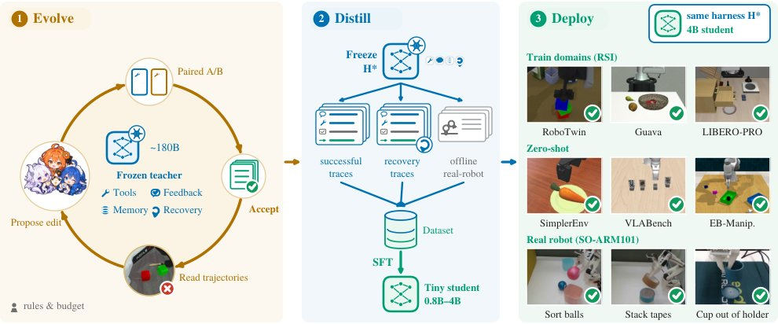
TinyAstral 总览：第一阶段冻结教师，由前沿 LLM 智能体提出框架修改并通过配对统计门控接受；第二阶段冻结最终框架 H*、采集教师含推理与恢复分支的轨迹，蒸馏出 0.8B–4B 学生，部署时在相同框架中替换教师。
解决了什么问题。基于视觉语言模型的机器人智能体，其表现不仅取决于规划模型本身，也取决于围绕它的执行框架——工具接口、反馈、记忆与失败恢复逻辑。已有工作分别证明框架进化能提升冻结规划模型、智能体蒸馏能把强智能体轨迹迁移到小模型，但能否先改进大教师的框架、再把收益迁移到小模型以降低推理成本，尚未得到验证。
方法。TinyAstral 分两阶段。第一阶段冻结教师（Qwen3.8-Flash-Next）权重，由前沿 LLM 智能体读取教师轨迹、提出框架修改（新工具、更诚实的工具返回、感知修正、失败处理、任务记忆），每次修改都要在预注册的配对 A/B 统计检验中通过才被接受，模型权重自始至终不变。第二阶段冻结最终框架 H*，采集教师含推理与失败恢复分支的轨迹，与离线真实机器人监督混合，蒸馏到 0.8B–4B 的 Qwen3.5 学生模型；部署时学生在同一个冻结框架中替换教师。
关键结果。RoboTwin 500 个评测回合上，教师随框架演化从 H1 的 33.4% 升到 H* 的 63.6%，最终 4B 学生达 62.8%；在 H1、H7、H16、H* 四个框架版本上分别训练的 4B 学生为 36.2%、49.8%、60.0%、62.8%，各自接近对应的教师。在 Guava 和 LIBERO-PRO 上，4B 学生分别为 93.6% 与 78.3%，教师为 94.7% 与 80.0%。三个零样本基准上，学生与教师差距在 5.0 个百分点内，与同一框架下的 552B DeepSeek-V4.1-Flash 差距在 2.4 个百分点内。20 个共享 SimplerEnv 回合上，4B 学生每回合 25.3 加速器·秒，教师为 123.8（4.9 倍），DeepSeek-V4.1-Flash 为 249.6（9.9 倍）。消融显示去掉教师推理文本会使 LIBERO-PRO 下降 19.3 个百分点、SimplerEnv Google VM 下降 11.2 个百分点、VLABench 下降 10.0 个百分点；加入真实机器人数据把离线下一调用准确率从 0.235 提到 0.923。
为什么值得看。结果说明，对冻结教师做框架进化所得到的系统级改进可以被蒸馏进小模型，让紧凑智能体以约五分之一的加速器时间接近大模型乃至 552B 规划器的表现。
局限 / 存疑。真实机器人闭环只在 SO-ARM101 上演示了三个任务，推理成本仅基于 20 个共享 SimplerEnv 回合测量；RoboTwin 上框架还读取了每个任务一句话的终止状态注释（其余五个基准没有），且部分回合结果不确定被计为失败。0.8B 学生在 LIBERO-PRO 上降到 54.7%，明显落后于 4B 学生的 78.3%，说明小模型容量在扰动基准上仍有代价。
AI 智能体 Agent / 自主智能
机器人 & 具身智能
alphaXiv · arXiv
多模态推理的参考缺口：视觉标记并非万能
配对基准ReGap-Bench显示，任务匹配的编号、阴影或网格可提升多模态推理，错配则可能有害。
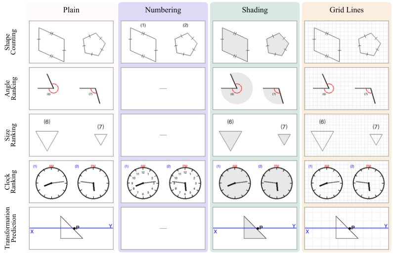
ReGap-Bench示例：同一场景在无参考与各参考条件下的裁剪图，题目与答案保持不变。
解决了什么问题。多模态大模型能识别视觉内容，却常在多步推理中丢失对同一对象的稳定指代，例如计数时重复或漏数。作者认为这不只是感知失败，而是“参考缺口”：语言推理未能稳定绑定到对应的视觉实体、区域或位置。
方法。作者提出ReGap-Bench配对基准，覆盖形状计数、角度排序、尺寸排序、时钟排序和变换预测五个任务，每个任务200个场景，仅改变编号、阴影或网格等外部参考，题目与答案保持不变。实验评估五个多模态模型，并测试2B到235B的六款Qwen3-VL模型；随后把任务匹配的参考封装成免训练视觉技能，在CartoMapQA上验证。
关键结果。任务匹配的参考带来提升：编号使形状计数提升6.0%到17.5%、时钟排序提升8.5%到25.0%；阴影使尺寸排序提升4.0%到11.0%；网格使尺寸排序提升2.0%到8.0%、变换预测提升2.0%到5.5%。在形状计数中，编号平均提升11.3%，阴影仅1.7%，网格为-4.1%；时钟数字从0个增至12个时，平均准确率由23.9%升至38.0%。六款Qwen3-VL上编号增益为9.0%到23.5%，未随规模消失；CartoMapQA上智能体在100题中为57题绘制覆盖层，编号子集由63.7%升至70.1%。
为什么值得看。把参考缺口视为独立于视觉感知的瓶颈，并给出免训练的干预方式，可能比单纯堆高分辨率编码器更直接地改善多步视觉推理。
局限 / 存疑。基准场景为合成渲染，任务与参考类型有限；CartoMapQA验证仅100题，阴影子集只有3题，外部有效性仍待检验。规模分析也只覆盖Qwen3-VL的形状计数。
计算机视觉 CV
alphaXiv · arXiv
单token重排器用在线蒸馏学习生成教师
Meta与普渡大学提出DecisionRank，将生成式教师的排序偏好蒸馏进单token决策重排器，以单次前向完成重排。
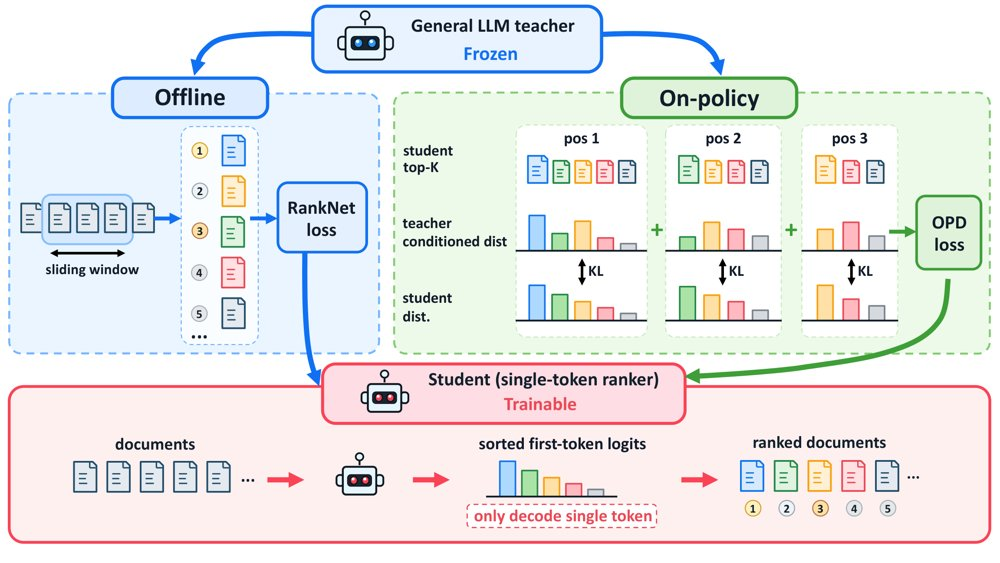
离线RankNet与在线项目空间蒸馏共享同一首token分数：冻结教师一次前向给出条件选择分布，学生按候选身份对齐并用于单次前向排序。
解决了什么问题。生成式listwise重排器靠自回归逐项生成排序，精度强但解码延迟高；单token重排器用首token文档ID logits一次排序，却难以继承教师的序列排序偏好。
方法。DecisionRank把学生当前首token分数排出的top-K候选当作选择前缀，让冻结生成教师在一次teacher-forced前向中输出每一步对剩余候选的条件选择分布。学生把同一批剩余候选上的首token分数归一化成分布，用reverse KL在候选项目空间对齐教师分布，并与离线教师排名上的RankNet损失联合训练。
关键结果。在Qwen3-8B学生上，TREC DL、BEIR、BRIGHT、R2MED的平均nDCG@10×100分别为64.34、57.98、36.86、43.55；相对listwise DirectRank-8B，TREC DL高1.42、BEIR高2.20、BRIGHT高0.99，但R2MED低0.95（43.55对44.50）。在TREC DL和BRIGHT上，8B学生比该生成式listwise对照分别快24.5倍和16.7倍。1.7B学生在TREC DL19–23平均63.89，超过其27B生成教师。
为什么值得看。这意味着检索系统可在不逐token解码的情况下获得较强的排序质量，并显著降低在线延迟；跨教师家族和1.7B–8B学生规模的增益也提高了部署灵活性。
局限 / 存疑。方法依赖强生成教师提供离线排名与在线条件反馈，训练仅用16,000条查询，候选集上限为100且学生仅使用100个单token文档ID，尚未验证更大候选集或开放域扩展。R2MED上8B学生为43.55，仍低于listwise DirectRank-8B的44.50。
基础大模型 & 基础模型底层研究
alphaXiv · arXiv
把去噪排成波前：流式视频生成提速 7 倍
Wave Forcing 让不同 chunk 的去噪阶段错峰流水，8 张 H200 上 4 步模型端到端达 134.8
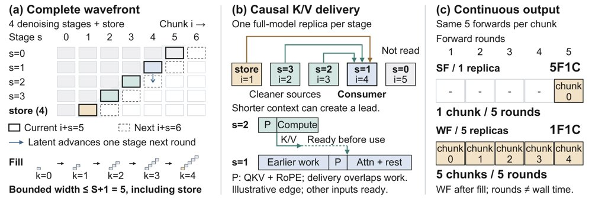
因果波前与连续输出（S=4）：去噪与 store 沿反对角线推进，五轮之内单个 Self Forcing 副本只输出 1 个 chunk，而 5 个 WF 副本在填充后输出 5 个。
解决了什么问题。现有的 chunk 级自回归流式视频方法（如 Self Forcing）把去噪与历史 K/V 刷新串行执行：每个 chunk 需要 S 次去噪前向再加一次 store 前向，即使在一步去噪的情况下也要两次前向，作者称之为 NF1C。这种串行结构使输出间隔被两段前向时间锁死，而更长的 rollout 还会带来质量退化与镜头漂移。
方法。Wave Forcing 让新 chunk 通过 chunk 级因果注意力读取更早、更干净但尚未去噪完成的 chunk 的中间状态，并把各去噪阶段与 store 分配到整模型副本上，形成宽度为 S+1 的有界波前流水线，填充后实现每个并发前向轮输出一个 chunk（1F1C）。为适配这种混合噪声上下文，作者设计了混合噪声初始化、off-policy DMD（含 LPIPS）与自生成历史因果适配的三阶段训练；执行侧 WaveRT 用提前发布 K/V、计算通信重叠、直接写入注意力槽位与负载均衡的 VAE 流水把阶段并发转成吞吐。
关键结果。在 Wan2.1-T2V-1.3B 上，5 步 WF 的 VBench Total 为 81.64（Rolling Forcing 81.15），VBench-Long Quality 81.26（RF 81.18），Dynamic Degree 从 RF 的 51.39 提升到短视频 94.44、100 秒视频 36.63 到 91.45，Subject Preservation 97.10 对 92.75，Camera Drift 0.37 对 0.17。系统侧 4 步 WF 在 8 张 H200 上达到 147.6 DiT FPS 与 134.8 端到端 FPS，相对单卡基线 19.06 FPS 为 7.07 倍；在匹配 SageAttention+W8A8 后端、步数与 GPU 数的 DiT-only 测试中，WP 在 1.3B–14B 六个尺度上最高达较快 CP 基线（Ulysses/Ring）的 2.53 倍（区间 1.025–2.530 倍），但 9B BF16 下为 0.985 倍，略逊于 Ulysses。
为什么值得看。它把生成上下文、训练目标与多 GPU 执行放在一起设计，说明跨 chunk 的流水线并发可以转化成实际的流式吞吐，而不必牺牲去噪步数。这为实时长视频生成提供了一条「图结构—训练—运行时」协同优化的工程路线。
局限 / 存疑。系统吞吐数字全部来自随机初始化的 dummy DiT 权重（只测执行成本、不测质量），14B 模型也未训练，因此这些加速尚未在真实权重上验证。质量侧的主体保持与镜头漂移指标依赖 100 条筛选 prompt 子集与几何启发式，阈值敏感性和与人类判断的一致性仍待确认；此外阶段并行受去噪步数限制，模型变大时对上下文并行的优势明显收窄。
生成式 AI
AI 工程、推理部署、系统方向
alphaXiv · arXiv
辅助轨迹奖励能否提升小模型自改进与迁移
比较SC与UID-Conj两种辅助信号，在30道AIME题上检验小模型在线与离线自改进及迁移。
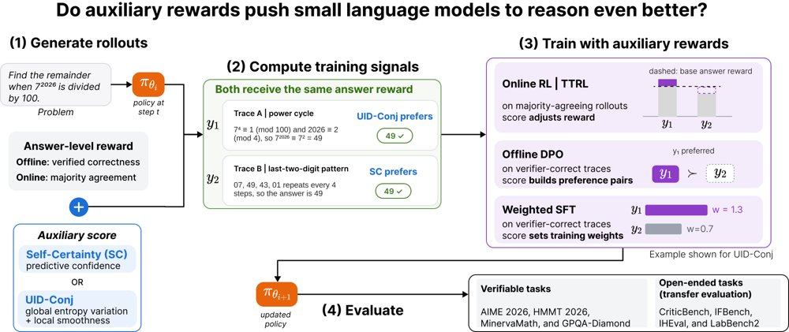
SC或UID-Conj在答案级奖励相同的轨迹间给出偏好，用于在线TTRL奖励增强、离线DPO偏好或加权SFT，并在可验证推理与开放式迁移任务上评估更新后的策略。
解决了什么问题。答案级奖励只能判断最终答案对错，无法区分同样正确的推理轨迹在推理可靠性、论证完整性和冗余上的差异。论文问，在监督有限时，辅助轨迹偏好能否提供额外学习信号，并迁移到其他任务。
方法。作者比较两类从模型自身预测分布提取的辅助分数：SC偏好预测置信度高的轨迹，UID-Conj偏好全局熵变化大且局部平滑的轨迹。在线用TTRL在30道无参考答案AIME2026上适配Qwen3-1.7B，并把辅助分数只用于区分多数一致组内的响应；离线在历史AIME的正确响应上构造DPO偏好和加权SFT。
关键结果。在线四基准宏平均，UID-Conj-TTRL为27.59%，未修改TTRL为25.51%，提升2.08个百分点；但配对bootstrap的held-out平均增益为+1.22个百分点，95%CI[-0.25,2.85]包含0。离线加权SFT中，UID-Conj为29.49%，均匀加权为27.56%，高1.93个百分点，95%CI[0.44,3.44]；UID-Conj-DPO为29.03%，随机DPO为27.78%，高1.25个百分点，CI[-0.90,3.47]。迁移到CriticBench，UID-Conj-TTRL的F1为63.23%、verdict准确率68.00%，相对TTRL分别高1.58和1.24个百分点（CI分别[0.18,3.01]、[0.20,2.32]）；LabBench2高0.76个百分点，CI[-0.80,2.32]。
为什么值得看。若成立，这能在没有新题和步骤标注时，从同样正确的自生成轨迹中榨取额外监督，并迁移到批评判断和科学推理。
局限 / 存疑。主要证据来自Qwen3-1.7B和有限数学监督；在线增益、DPO和LabBench2的置信区间包含0，且随机控制不能完全排除组内奖励变异本身的贡献。轨迹质量诊断只用一个模型评委，迁移评测也未覆盖开放式推理。
基础大模型 & 基础模型底层研究
强化学习 RL & 序列决策
alphaXiv · arXiv
反转投机解码：大模型提议，小模型验证
把投机解码的角色对调：大模型一次前向预测整块 token，再一次前向验证，32B 模型上平均吞吐达 2.5 倍。
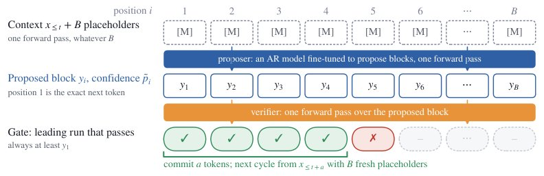
ProVe 的单轮循环：提议器用一次前向从占位符预测一整块候选 token，第二次前向验证该块后才开始下一轮。
解决了什么问题。投机解码通常让一个小模型串行草拟 token、大模型并行验证，从而加速自回归（AR）生成。这种做法需要额外训练一个草稿模型或草稿头，且加速比受草稿质量限制。论文追问：能否反过来，让大模型自己承担「提议」的角色？
方法。作者从标准 AR 检查点出发，把大模型微调成提议器（proposer），使其在一次前向中从占位符预测一整块未来 token，再用额外一次前向验证该块，构成 ProVe 解码。验证器可以是更小的 AR 模型，也可以是提议器自身；后者称为 ProVe-lossless，能够复现提议器的贪心 AR 解码结果。作者在六个基准上测试了 32B 提议器搭配 3B 验证器的配置。
关键结果。块大小为 16 时，提议块在 GSM8K 上的平均 AR 匹配前缀为 6.6 个 token。使用 32B 提议器时，ProVe-lossless 在六个基准上达到平均 2.5 倍 AR 吞吐，且无需训练单独的草稿头；搭配 3B 小验证器时，ProVe 达到平均 2.7 倍吞吐，六任务平均准确率比 AR 低 2.6 个百分点。
为什么值得看。它把「小模型草稿、大模型验证」的常规分工倒转，省去单独训练草稿头的步骤，并给出一个可通过更换验证器规模来调节的吞吐与精度权衡旋钮。
局限 / 存疑。2.7 倍吞吐是以六任务平均 2.6 个百分点的精度损失换来的，摘要未给出其他块大小或验证器规模下的完整权衡曲线。此外，把大模型本身微调成提议器是否会削弱其原有通用能力，以及相对训练独立草稿头的实际成本对比，论文摘要均未给出具体数字。
基础大模型 & 基础模型底层研究
AI 工程、推理部署、系统方向
alphaXiv · arXiv
自教师也要训练：TESD改进在线自蒸馏
TESD让自教师生成轨迹并用环境奖励更新，再按可靠度加权学生损失，在多个模型和任务上超过SDPO与GRPO。
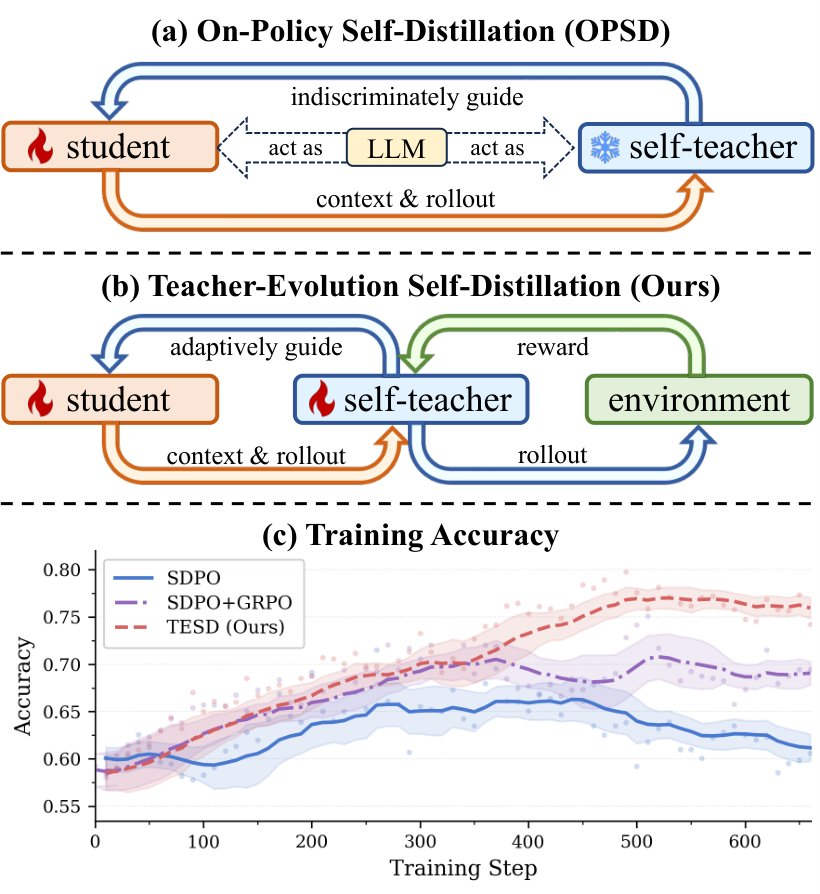
图：OPSD对所有样本无差别指导且自教师不进化(a)；TESD用教师rollout的环境奖励改进自教师并按可靠度加权(b)，从而获得更持续的性能提升(c)。
解决了什么问题。OPSD用特权上下文提示学生模型充当自教师，提供token级监督，但默认自教师能正确指导所有学生轨迹。论文发现该假设不成立：教师会给错误轨迹高置信度、给正确但与上下文不相似的轨迹低置信度，且其教学能力在训练中不升反降。只优化学生难以改善监督质量，导致OPSD后期性能停滞。
方法。TESD让自教师也采样轨迹并接收环境奖励，奖励由任务正确性和与特权上下文的归一化编辑距离组成，再用GRPO式目标优化教师。教师轨迹的平均奖励被softmax归一化并缩放为学生蒸馏损失的样本权重，以降低不可靠指导的影响。学生仍保留OPSD的token级散度损失，与教师优化联合训练。
关键结果。在SciKnowEval与Tooluse的五任务均值上，Qwen3-4B的TESD为74.32%，高于GRPO的73.40%和SDPO的69.66%；Qwen3-8B为75.61%对74.94%和70.21%；Olmo3-7B为69.75%对68.42%和66.84%。LCBv6三模型均值为56.45%，略高于SDPO+GRPO的56.07%和SDPO的54.90%，但Qwen3-1.7B上TESD为45.98%，低于SDPO+GRPO的46.38%。
为什么值得看。这项工作把自蒸馏里的教师从被动EMA副本变成可优化角色，为缓解OPSD后期停滞提供了不同于增强特权上下文的路线。若在更大规模上复现，可能影响RLVR后训练中token级与序列级信号的组合方式。
局限 / 存疑。论文自述TESD因新增教师奖励而引入λ_edit等额外超参数，且教师仍依赖EMA更新，教师能力进化速度受平滑机制限制。实验也并非全面占优：LCBv6上Qwen3-1.7B的TESD为45.98%，低于SDPO+GRPO的46.38%。
基础大模型 & 基础模型底层研究
强化学习 RL & 序列决策
alphaXiv · arXiv
从碎片到融合：全模态嵌入综述与路线图
一篇立场论文主张，文本、视觉、音频等嵌入研究正在收敛，并提出覆盖、可比、可组合三层能力框架与三条统一路径。
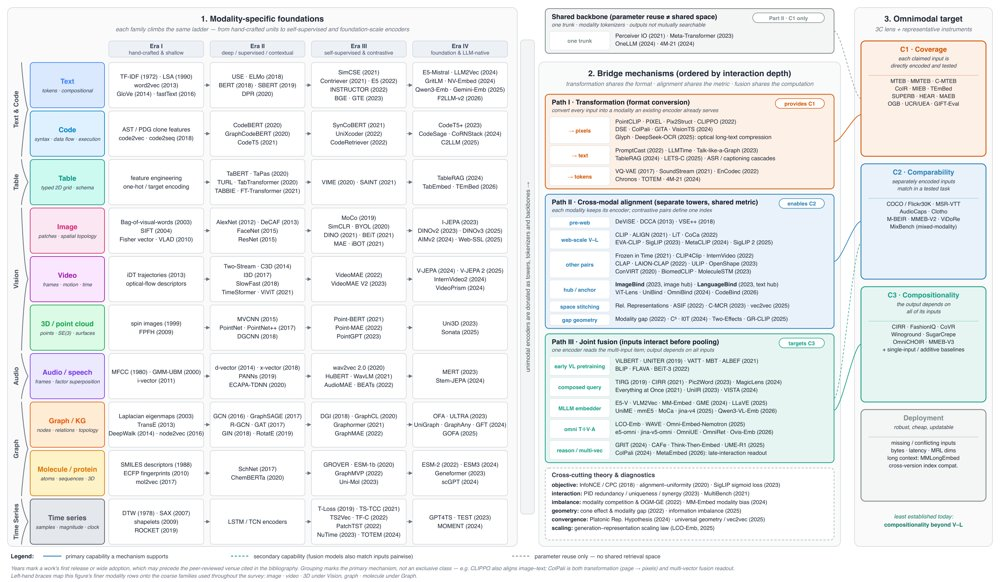
研究地图：左侧十类模态各自沿四代技术阶梯演进，中部是共享骨干与变换、对齐、联合融合三座桥，右侧是覆盖、可比、可组合的 3C 评估视角。
解决了什么问题。嵌入模型是搜索、推荐等几乎一切现代 AI 系统的底座，但研究按模态分裂成文本、视觉、音频、图、表格、时间序列等互不往来的社区，连综述与基准也各说各话。作者认为这种碎片化掩盖了一个更深的收敛：对比学习、Transformer 架构与粒度迁移正把各模态的嵌入研究推向共同原则，而模态特有的难题仍未被充分讨论。
方法。这是一篇立场与综述论文，提出 coverage、comparability、compositionality 三个递进能力，对应 transformation（拓宽覆盖）、alignment（建立可比）、joint embedding（追求可组合）三条统一路径。作者用「交集—差异—复用」三段式组织跨模态分析，并给出一张有边界的跨家族迁移机会图，明确区分已记录的用法与尚属提议的实验。此外，论文用 2015–2025 年 arXiv 标题关键词统计来刻画领域重心的迁移。
关键结果。关键词统计显示：标题含 multimodal embedding 的论文在 2023 年前每年不超过 10 篇，2023–2025 年分别为 15、29、62 篇，2024 到 2025 年单年增长 2.1 倍，而同期整体记录仅增长 13%；其占 embedding 标题记录的份额从十年中多数时间的约 1% 或更低升至 2025 年的 3.5%。相对地，cross-modal embedding 一词在整个窗口内每年不超过 8 篇。检索到的记录从 2015 年的 140 条增至 2025 年的 1,784 条，2025 年 cs.LG 以 952 条居首，cs.CV 为 550 条，cs.CL 在 2019 年达峰 432 条，cs.IR 升至 187 条，cs.DB 始终边缘。论文未给出统一嵌入的下游性能数字；作为跨模态统一配方的例证，它引用 wav2vec 2.0 仅用十分钟转录语音即可微调。
为什么值得看。如果收敛判断成立，检索与推荐系统可以共享一套跨模态底座，而不是为每种模态维护独立管线。论文的价值更在于把「哪些方法能移植、移植前需要什么前提」讲成可检验的清单，为多模态检索研究者提供了路线图与评估口径。
局限 / 存疑。这是立场论文，没有新实验或新基准，3C 框架是作者给出的规范性主张而非实证结论。领域趋势主要靠 arXiv 标题关键词统计作为代理，受命名习惯影响，且跨模态迁移机会图中不少格子只是「提议实验」，预期收益是条件性的、尚未验证。
基础大模型 & 基础模型底层研究
alphaXiv · arXiv
用扩散噪声当隐动作的分层世界模型
ID-WM 把「去哪儿」和「怎么走」拆开：高层扩散模型只生成可达子目标，低层世界模型反解动作。
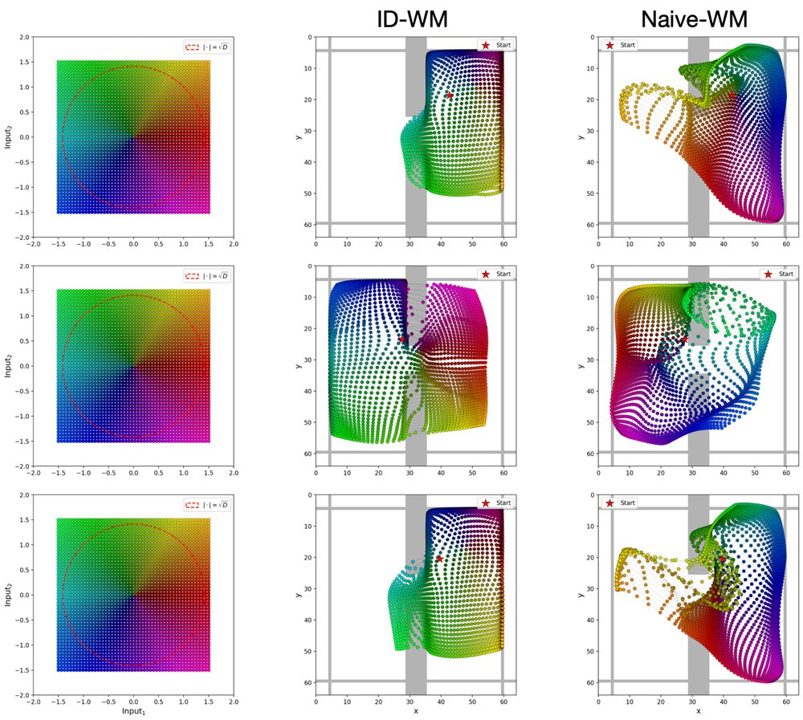
ID-WM 与跳帧数相同的朴素世界模型所诱导的状态映射可视化对比。
解决了什么问题。用世界模型做规划能让具身智能体在测试时适应新目标，但长时程任务受两类问题拖累：搜索复杂度随规划步数指数增长，预测误差在长 rollout 中不断累积。现有分层方法多依赖固定宏动作或潜技能，表示脆弱、缺乏细粒度控制，还需任务相关的价值函数或预训练低层策略来保证子目标可行。
方法。作者提出 ID-WM：高层是一个以当前状态和 Δ 为条件的扩散模型，只隐式建模动力学，输出 Δ 步内的邻近可达状态；采样时的初始噪声被当作隐式高层动作，规划器在标准高斯空间里搜索。低层是确定性 transformer 世界模型，作为逆动力学求解器，把子目标落地为可执行动作。推理时用 CEM 交替做子目标生成与子目标实现，并对噪声加正则，防止规划器利用模型漏洞钻出分布外转移。
关键结果。在 Wall、PushT、Maze 三套导航与操作环境上，ID-WM 相比分层离线 RL、模仿学习和扩散规划器整体提升 38.5%，相比单层世界模型 MPC 提升 135%。PushT 随机目标成功率 0.77，SL-WM 仅 0.21，把 SL-WM 重规划次数增至三倍也只到 0.28；视觉版 PushT 在 d=75 时成功率 0.50（DINO-WM 为 0.00、HWM 为 0.14）。推理耗时 53.08 秒，约为 Diffuser 的 1/27、H-Diffuser 的 1/54。
为什么值得看。它说明分层世界模型可以靠「局部物理可行性」而非任务先验来拼接新轨迹，在无奖励标注的离线数据上对未见目标做零样本长时程规划，为通用世界模型的规划器设计提供了一个可复用的分解思路。
局限 / 存疑。作者自己承认，依赖扩散潜空间中的搜索式优化使推理时间明显高于反应式策略和确定性世界模型；分层只解除了复杂度随轨迹长度的增长，复杂度仍随状态维度增长。此外全部实验都在 Wall、PushT、Maze 这类低维或简化视觉环境上完成，真机与高维复杂场景尚未验证。
alphaXiv · arXiv
像素扩散 Transformer 参数化与高频修复
论文提出 MFlow，按 PCA 主方向学习 x0 与速度预测的连续插值，并用后置 ConvRefiner 恢复高频细节
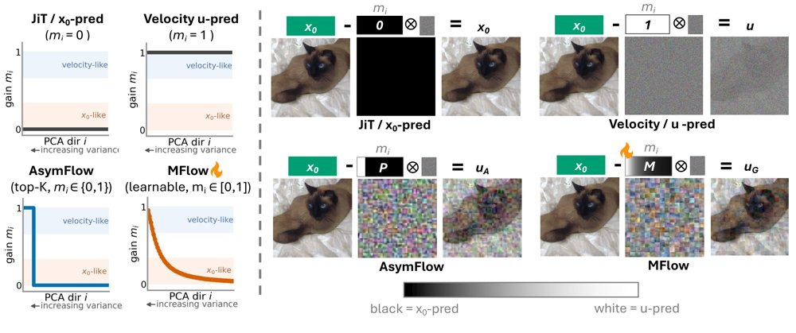
方法概览：提出按数据主方向学习的参数化，作为对以往固定参数化的推广框架。
解决了什么问题。像素空间扩散模型避免了 VAE 的有损瓶颈，但 JiT 式大 patch 的 vanilla transformer 面临两个问题：高维 patch 应采用 x0 还是速度预测，以及激进 patch 化是否会丢失细尺度细节。现有 AsymFlow 用固定秩的二元子空间切分，需要为每个设置做昂贵搜索，而固定参数化未必适配不同数据和模型容量。
方法。MFlow 为每个数据 PCA 主方向分配可学习的连续增益 m_i∈[0,1]，把回归目标写成 x0−Mε，并在恢复完整速度后用标准速度空间流匹配损失端到端训练增益与生成器。该方法严格包含 x0 预测、速度预测和 AsymFlow 的二元切分作为特例，无需手动选择秩。针对高频缺失，ConvRefiner 在冻结扩散主干的前提下后置训练轻量残差卷积模块，用感知与对抗损失只优化该模块。
关键结果。在 ImageNet 256×256 上，B 级模型加 LPIPS 后 MFlow 的 FID 为 3.33，优于 JiT-B 的 3.42 和 AsymFlow-B 的 3.40；H 级 MFlow 为 1.81，AsymFlow 为 1.79，JiT-H 为 1.82。UCF-101 视频 B 级 FVD 为 122（JiT 152、AsymFlow 126），L 级 MFlow 为 97，加后置 Framewise-LPIPS 后为 94。文生图上 1.1B 的 MFlow-L/16 在 GenEval/DPG/PRISM 取得 0.8843/84.70/73.9，13B-MoE（2.9B 激活）达到 0.8898/86.10/75.2。在 ImageNet H 级，JiT-H 的高频亏空为 -6.69 dB，MFlow+ConvRefiner 改善到 -1.29 dB，FID 保持 1.81。
为什么值得看。它把预测参数化从手工选择变成可学习、按方向自适应的设计，并指出 FID 之外的高频统计缺口。这对像素空间生成走向高分辨率、视频和文生图有直接参考价值。
局限 / 存疑。作者承认 MFlow 相对强固定参数化的提升有时有限，且增益与网络联合优化形成移动回归目标，训练损失更低不必然带来更好 FID；在 ImageNet H 级 AsymFlow 的 1.79 仍略优于 MFlow 的 1.81。ConvRefiner 显著缩小频谱差距但 FID 几乎不变，说明 FID 对局部频率统计不敏感，感知质量还需纹理敏感指标和人评确认。
alphaXiv · arXiv
可微仿真训练四旋翼穿越动态窄缝
苏黎世大学团队用可微仿真单阶段训练视觉-惯性策略，让四旋翼在仿真中达99.3%成功率，并在真实世界10次飞行中成功8次。
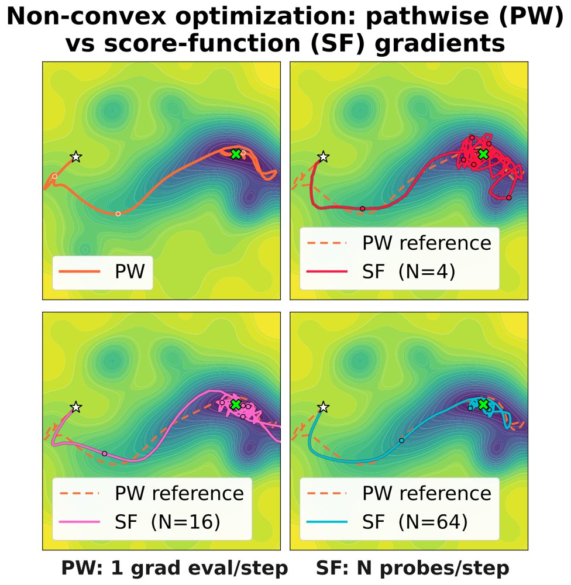
四旋翼利用机载视觉与惯性测量穿越移动窄缝；策略经可微仿真训练后零样本迁移到真实世界。
解决了什么问题。四旋翼穿越移动窄缝要求厘米级空间对齐与精确时机，成功区域是一条很薄的可行流形，时机、位置、姿态或视觉可观测性的小误差都会导致碰撞。此前规划与学习方法多依赖特权状态、教师、规划器或蒸馏。能否仅从随机初始化、无教师/规划器/蒸馏地直接学习动态窄缝穿越，仍是一个开放问题。
方法。作者提出可微的移动缝隙目标：用带符号距离对居中、对齐和平滑碰撞项做门控，把稀疏的穿越事件转化为稠密的路径代价。该目标被集成到一个视觉特征到总推力/机体角速率指令的策略中，单阶段从随机初始化训练，并通过可微闭环rollout做BPTT优化。框架支持特权状态和机载视觉-惯性观测，不需要演示、轨迹标签、教师、规划器或蒸馏。
关键结果。仿真中，视觉-移动缝隙策略在1000次rollout上达到99.3%成功率，状态-静态、视觉-静态和状态-移动分别为100.0%、98.9%和100.0%，穿越误差为1.0–2.4 cm；训练在单块GPU上耗时0.4–5.6分钟。匹配的1000环境五种子对比中，移动缝隙上调优PPO平均四个收敛种子使用19倍更多transitions和45.5倍更多训练时间。真机实验中，10×38 cm四旋翼穿越25×80 cm移动缝隙，10次可验证飞行成功8次（80%，95% Wilson区间49–94%），高保真仿真成功率为81.0%。
为什么值得看。这表明在平滑但苛刻的薄流形任务上，路径梯度能提供比稀疏奖励RL更有效的学习信号，为无需教师、规划器或蒸馏的敏捷视觉-惯性飞行提供了一条可训练路径，并完成了从可微仿真到实物闭环的验证。
局限 / 存疑。局限在于训练使用特权几何和碰撞数据，视觉输入是工程化的角点特征而非原始图像，真机仅验证LED标记和平面摆运动，自然开口、突变或非周期运动、严重视觉丢失、硬接触和长时程稳定性均未测试。10次飞行带来较宽的统计不确定性（49–94%），两次失败无法区分动力学/跟踪失配与感知或初始化影响，且BPTT的内存与计算随horizon和保真度增长。
alphaXiv · arXiv
HiRes：两级残差改造 PreNorm
论文提出 HiRes，将单一 d 维残差流改为 D 维外层与 d 维内层的两级结构。
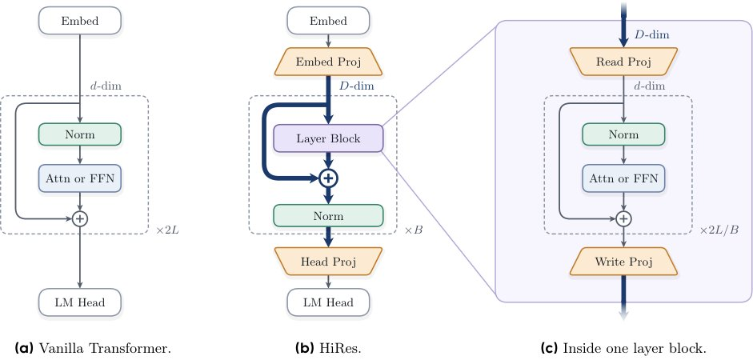
HiRes 的两级残差层级：(a) 标准 PreNorm 只有一条 d 维残差流；(b) HiRes 在层块间携带 D 维 PostNorm 外层残差；(c) 每个块读入 D→d，在 d 维内层残差上运行 2L/B 个 vanilla 子层，再写回 d→D。
解决了什么问题。标准 PreNorm Transformer 只维护一条 d 维残差流，所有子层共享同一宽度，跨层信息混合与容量扩展受限于该单一通道。如何在不过度增加计算的情况下引入更宽的外层残差路径，是论文关注的问题。
方法。HiRes 在层块之间增加一条 D 维的 PostNorm 外层残差，每个块通过稠密接口把 D 维读入 d 维，在 d 维内层残差上运行 2L/B 个 vanilla 子层，再写回 D 维。灰色与深蓝色路径分别对应 d 和 D 宽度，橙色梯形是新增的稠密接口，虚线框表示重复的残差单元。
关键结果。论文未给出具体数字；原文仅给出结构参数：外层残差维度为 D、内层为 d，每个块运行 2L/B 个 vanilla 子层，并通过 D→d 与 d→D 的稠密接口连接。
为什么值得看。这种两级残差设计为在保持内层子层宽度的同时引入更宽的外层信息通道提供了可实现的架构模板，可能影响后续对残差流宽度与深度的分配。
局限 / 存疑。材料仅给出结构示意，未提供实验设置、基准结果或消融数据，因此无法判断 HiRes 相对标准 PreNorm 的实际收益与额外开销。外层 D 维接口的稠密读写也可能带来参数和计算成本，论文未给出具体数字。
alphaXiv · arXiv
CANS：闭式神经元缩放兼顾行为控制与能力保持
CANS 以目标 token 对数概率和通用输入 KL 为代理，闭式求解 FFN 神经元缩放系数，无需训练或额外推理。
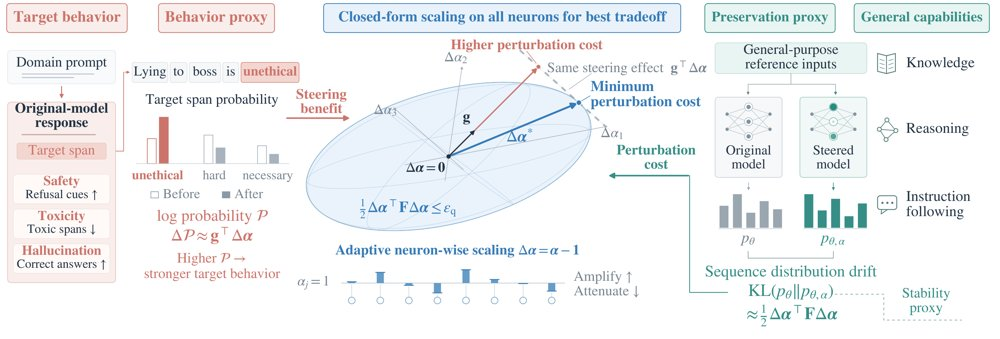
CANS 概览：左侧用目标 token 对数概率控制目标行为，右侧用通用输入上的输出分布 KL 保持通用能力，中心由两个代理的局部近似得到所有神经元的闭式自适应缩放系数。
解决了什么问题。现有激活引导方法无需训练即可动态控制 LLM 行为，但可能损害通用能力；神经元的多义性使针对目标行为的缩放干扰共享功能。同时，许多方法依赖领域专用的干预设计，迁移到新行为时往往需要重新定义评分、选点和幅度。
方法。CANS 为所有 FFN 神经元分配缩放系数，用目标 token 对数概率代理行为收益，用通用输入上的输出分布 KL 代理能力损失。对两个代理做局部近似后，方法在共享保持预算下得到闭式解，并把系数折叠进 down-projection 权重，因而不增加推理时计算。跨域适配只需采样模型响应、过滤并标注目标片段。
关键结果。在 Qwen3-4B 上，CANS 将 HarmBench 攻击成功率从 15.50% 降到 1.75%，平均能力仅下降 1.11 分；将 RealToxicityPrompts 有毒提示率从 19.17% 降到 1.00%，平均能力无损失；在 Llama-3.1-8B-Instruct 上把 TruthfulQA 幻觉率从 17.75% 降到 0.75%，平均能力下降 0.06 分。在安全、毒性和幻觉控制上，CANS 相比 SFT、CAA 和神经元级基线取得相当或更好的引导效果，同时更好地保持 MMLU、BBH、IFEval。
为什么值得看。它为推理时的行为控制提供了轻量替代方案：无需迭代训练或额外推理计算，同一套数据构建和干预流程可跨安全、毒性和幻觉等域复用。
局限 / 存疑。局限包括：仅保留 Fisher 对角项，忽略神经元之间的交互；依赖生成响应、行为标签和目标片段标注，对幻觉等复杂行为的监督可能不完整。Qwen3 上的幻觉控制增益有限，且预算增大后出现饱和。
alphaXiv · arXiv
FlatCake：DRAM 与 SSD 同级的 K
FlatCake 用统一 64 位地址空间把主机 DRAM 与 NVMe SSD 并列为同级介质，KV 块创建即定址、终

FlatCake 架构：(a) 控制路径由 FC-GVA 把块键映射为 64 位 GVA 并在写时确定介质，FC-MAS 分离 DRAM-ready 与 SSD-preparing 两条队列；(b) 数据路径上 DRAM 命中走 cudaMemcpyAsync，FC-CIO 经 GDS 把合并后的 SSD 读流入有界 GPU 暂存窗口。
解决了什么问题。Mooncake、LMCache、SGLang HiCache 等系统把主机 DRAM 当作 SSD 之前的 L2 缓存与暂存层，依赖「时间过滤」和「暂存合并」两个前提。作者分析来自 Mooncake、Qwen 百炼与 Claude Code 的八条生产 trace 后发现，这两个前提同时失效：七条对话/API trace 中 53.2%–94.0% 的块只被访问一次，复用距离均值可达 2,550 个请求、P99 达 54,728；而 Claude Code 相反，83.4% 的块被复用、理想命中率 98.31%，但单请求平均 3,421 个块（218,922 token），单会话足迹达数十 GB。两种情形都让多数命中必须由 SSD 供给，而 DRAM 暂存缓冲的需求按 O(context×concurrency) 增长会在高负载下被耗尽，按驱逐顺序落盘又把会话前缀打散，迫使 O(layers×blocks) 次碎片化小读。
方法。FlatCake 把 DRAM 与 SSD 作为统一 64 位 GVA 地址空间中的同级介质，利用 KV 块 write-once、不可变、按会话作用域整体复用的性质，在创建时按会话连续、layer-major 顺序直接写入目标介质，之后不再迁移。三个组件分工：FC-GVA 在写时把块绑定到介质并把介质、节点、偏移编码进 64 位地址，实现 O(1) 路由与零回写的会话粒度回收；FC-MAS 用 DRAM-ready 与 SSD-preparing 双队列隔离快慢请求，SSD 预取按 size-aware HRRN 排序、完成后按原始到达时间重新入队；FC-CIO 把写时布局与读时 sort-merge 合并结合，经 GDS 把每层连续区间流入双缓冲的有界 GPU HBM 窗口，与逐层计算重叠。系统实现在 SGLang 中，约 8.8K 行 C++/CUDA 与 7.1K 行 Python，不改模型 runner 与 attention kernel。
关键结果。在 Claude Code 生产 trace 与 DeepSeek-V4-Flash（8×B200）上，FlatCake 在 0.1–1.0 QPS 全程维持 94.16%–94.57% 的交付命中率，距 trace 的 94.72% 前缀复用上限不到 0.6 个百分点，而 Mooncake 从低负载 87.9% 跌到 0.5 QPS 以上的 64.26%。1.0 QPS 时平均 TTFT 为 7.57 s（Mooncake 为 12.24 s，1.6×；仅 DRAM 层为 17.51 s，2.3×），P50 TTFT 为 6.26 s（1.8×），总吞吐为 98.3K token/s（1.6×）。SSD 读带宽 5.03 GB/s，为 Mooncake 2.69 GB/s 的 1.9×；平均预取延迟 1.64 s，Mooncake 则从 3.16 s 升到 9.50 s（峰值高 5.8×）；读写放大方面消除 Mooncake 6.51×–6.72× 的 SSD 读放大。Llama-3.1-70B（TP4，4×A100，8K–128K 上下文）上平均 TTFT 比 Mooncake 低 1.5×–2.4×、比 Mooncake-GDS 最多低 1.8×；64K 时 Mooncake-GDS 为 6.60 s、FlatCake 为 3.74 s（1.8×），吞吐 8.6K 对 14.0K token/s。消融显示去掉 FC-MAS 后平均 TTFT 增加 10%–11%、P99 增加 27%。
为什么值得看。这项工作把 KV 缓存存储的核心问题从「在层级间搬数据」改写为「在写入时决定数据放在哪里」，说明 write-once 的不可变语义足以支撑扁平化设计，对长上下文 agent 类负载的 SSD 回读路径尤其关键。
局限 / 存疑。评估主要建立在单条 Claude Code 生产 trace 与两个模型／两代 GPU 上，跨工作负载的普适性仍需更多 trace 验证。写时放置依赖 radix 引用计数、轮次、回复长度阈值 τ 与 L_agent 等引擎信号来预测复用作用域，这些阈值的选取依据与误判率论文未给出具体数字；一旦判错，块只会以 SSD 带宽而非 DRAM 带宽被服务，虽然论文称误判代价不对称，但未量化最坏情况。
alphaXiv · arXiv
多跳问答拆成自包含子问题并复用答案
DeFT-RAG 让大模型每次只生成一个自包含子问题，把是非判断交给微调小模型，在三个多跳基准上胜过 13 个基线。
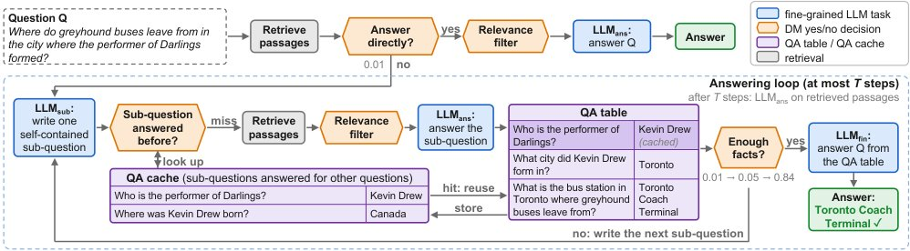
DeFT-RAG 在示例三跳题上的流程：大模型只做三项细粒度文本任务（蓝色），所有是非判断由微调决策模型完成（橙色），QA 表由规则更新，第一个子问题因命中 QA 缓存而直接复用答案。
解决了什么问题。多跳问题的证据链要经过问题从未提及的桥接实体，图式 RAG 只从问题点名的实体检索一次，在 MuSiQue 三跳题上多数方法只有 6–10% 能取全证据链。迭代式 RAG 逐步检索，却把规划子问题、判定依赖、改写子问题和记录已知事实都压给大模型，导致规划、依赖、改写和跟踪四类错误沿步骤累积。
方法。作者提出 DeFT-RAG：每一步只根据原问题和已得到的问答对生成一个自包含子问题，子问题必须点名它要问的每个实体，因此无需预先规划、无需处理依赖、也无需改写。记录工作改由规则更新的 QA 表承担，相关性、能否直接作答、事实是否足够这三类判断交给用 LoRA 微调的 4B 决策模型。系统还把问答对存入 QA 缓存，后续问题若问到同义子问题就直接复用答案，省去检索与大模型调用。
关键结果。在 MuSiQue、2WikiMultiHopQA、HotpotQA 各 1000 题、gpt-4o-mini 与 Qwen3.6-35B-A3B 两个骨干下，DeFT-RAG 在三项指标上均列第一。MuSiQue 准确率 0.629（gpt-4o-mini，比次优 Hi-Q 的 0.577 高 5.2 点）、0.636（Qwen3.6，比 0.583 高 5.3 点）；2Wiki 上为 0.852（与 Self-Ask 的 0.849 持平）和 0.867（比 LogicRAG 的 0.838 高 2.9 点）；HotpotQA 上为 0.874 和 0.871。三基准平均准确率 0.785 与 0.791。证据覆盖上，MuSiQue 三跳题有 46%、四跳题有 18% 拿到完整证据链，同时每题只给大模型 390 词段落，少于 vanilla RAG 的 870 词；每题输入 1569 token，低于 Self-Ask 的 6140。在 1000 道 MuSiQue 题共享 QA 缓存时，23.1% 的子问题由缓存作答，LLM 调用减少 12.9%，准确率 0.642 对 0.629（p=0.18）。
为什么值得看。它把“让大模型少干杂活”落到具体设计：生成、判断、记录三者分离，缓存又让同一语料上的中间答案可跨题复用，为多跳 RAG 提供了一条不依赖图索引预构建、且能换任意骨干模型的路线。
局限 / 存疑。代价是延迟：由于每一步都要调用本地决策模型，中位时延达 9.9 秒，为所有方法中最高，决策模型调用占答题时间约 60–70%。方法在需要嵌套子问题的 2Wiki 桥接比较题上明显吃力（这类嵌套子问题 38% 得不到答案，235 题中有 75 题触到步数上限），因此在 2Wiki 上只与 Self-Ask 持平；缓存复用只在 MuSiQue 上做了评测，决策模型的训练也依赖各基准训练集的黄金标注。
alphaXiv · arXiv
Movens-5M：万小时可执行人形动作数据
作者发布超1万小时、500万条可执行人形动作序列的Movens-5M数据集，并训练Movens-Zero。
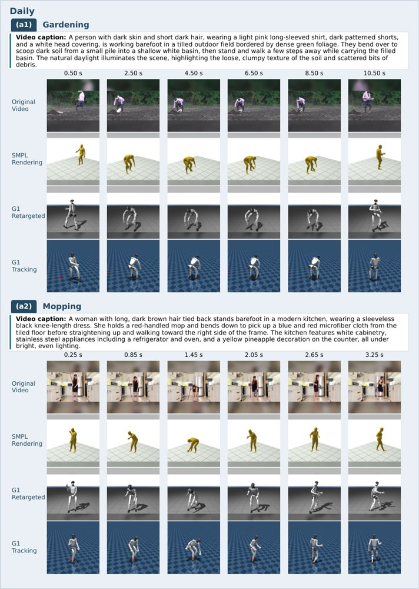
代表性样例：日常场景中的（a1）园艺和（a2）拖地。
解决了什么问题。人形动作基础模型的扩展受限于多样且机器人可执行的数据稀缺，同时难以从异构多模态输入中联合学习并支持实时闭环控制。现有生成器–跟踪器方案常把语义生成与底层执行分开验证，缺少统一的数据与模型尺度实验。
方法。作者用自动流水线从互联网视频构建Movens-5M：超1万小时、500万条物理可执行的人形动作序列，配有对应人体动作及对齐文本、RGB视频、语音和音乐。数据经视觉/人体动作过滤、闭环物理精修、跟踪验证和分布平衡。Movens-Zero保留生成器–跟踪器结构，从执行验证数据中学习共享动作先验，并以最新机器人状态条件化在线生成，再交给底层跟踪。
关键结果。在OMG基准上，Movens-Zero在14项指标中12项最优：FID从24.68降至10.13（降59.0%），R@3从57.71%升至85.06%（增27.35个百分点），MPJPE和g-MPJPE分别降2.5%和11.8%，跌倒率0.29%，J-Limit从19.14%降至10.45%。在源分离的Movens-Intent文本条件下，14项指标中10项最优或并列最优：FID从30.19降至17.65（降41.5%），R@3为62.57%，比最强基线高0.70个百分点，MPJPE从35.26降至33.40（降5.3%），g-MPJPE从89.94降至89.15（降0.9%），跌倒率0.00%。音乐条件下，Movens-Zero在12项中9项最优或并列最优：BeatAlign 0.60（基线0.59），FID-k和FID-g为53.44和2.31，分别改善33.6%和13.2%，跌倒率0.00%，但J-Limit为15.32%，最佳基线为2.05%。语音条件下，14项中10项最优：FID从30.66降至23.15（降24.5%），R@3为74.30%，比最强基线62.40%高11.90个百分点，MPJPE和g-MPJPE从34.83和89.82降至32.63和76.38（降6.3%和15.0%），跌倒率0.00%，但C-Slide 0.75、J-Limit 4.93%，最佳基线分别为0.40和2.00%。数据–模型扩展实验显示，XL规模下训练数据从10%增至100%，Text R@3从24.92%升至62.57%（相对提升151.1%），Speech R@3从21.76%升至74.30%（相对提升241.5%），Video MPJPE从110.55降至40.90 mm（降63.0%）。
为什么值得看。如果互联网视频能稳定转化为可执行人形动作，数据瓶颈有望从真实机器人采集转向自动流水线与物理验证。该工作还显示数据规模与动作专家容量存在互补增益，为后续多模态人形基础模型提供可复现的扩展路径。
局限 / 存疑。音频条件下J-Limit为15.32%，远高于最佳基线2.05%；语音条件下C-Slide为0.75、J-Limit为4.93%，仍逊于最佳基线0.40和2.00%，说明关节限位与接触一致性仍是短板。作者也指出，留一模态消融不足以把跨指标变化归因于单一机制，数据流水线为累积实验，难以分离各阶段独立贡献。
alphaXiv · arXiv
期刊
Nature · Chinese PhD students in clinical medicine can graduate without a thesis — more degrees to follow
《自然》报道，中国临床医学博士生可在不提交学位论文的情况下毕业，并将“实践型博士”项目从工程类学生扩展到更多学位。该报道称更多学位将跟进。对机器学习研究生而言，这反映出博士培养评价可能更强调实践成果，但报道未给出机器学习领域的具体数字。
Nature · Author Correction: mTORC1 drives cell-autonomous astrocyte reactivity in tuberous sclerosis
《Nature》于2026年11月2日在线发布了一则作者更正，涉及论文“mTORC1 drives cell-autonomous astrocyte reactivity in tuberous sclerosis”。该更正针对mTORC1在结节性硬化症中驱动细胞自主性星形胶质细胞反应性的原始研究，提醒读者在引用或复现相关结论时核对更新版本。对机器学习研究生而言，这类更正提示在构建文献数据集或复现流程前应检查论文的勘误状态。